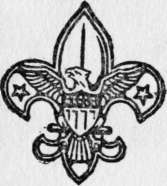
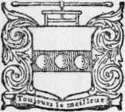

The Boy Scouts of Woodcraft Camp | by Thornton W. Burgess
In this and succeeding volumes, " The Boy Scouts on Swift River," " The Boy Scouts on Lost Trail," " The Boy Scouts in a Trapper's Camp," I have sought to portray the life of such a school camp under Boy Scout rules. " The Boy Scouts of Woodcraft Camp " has been written with a twofold purpose: To stimulate on the part of every one of my boy readers a desire to master for himself the mysteries of nature's great out-of-doors, the secrets of field and wood and stream, and to show by example what the Boy Scout's oath means in the development of character.
| Title | The Boy Scouts of Woodcraft Camp |
| Author | Thornton W. Burgess |
| Publisher | The Penn Publishing |
| Year | 1912 |
| Copyright | 1912, The Penn Publishing |
| Amazon | The Boy Scouts Of Woodcraft Camp |
The Chief Greeted Him Pleasantly
By Thornton W. Burgess, Author of The Boy Scouts on Swift River The Boy Scouts on Lost Trail The Boy Scouts in a Trapper's Camp
Illustrated by C. S. Corson
To my Wife, Whose faith and encouragement have placed me in her debt beyond my power to pay
 Introduction
Introduction- The Boy Scout movement has appealed to me from the very first as a long step in the right direction. It stands for an organized boyhood on a world-wide plan. It has in it the essentials for a stronger...
- Chapter I. The Tenderfoot
- In the semi-darkness of daybreak a boy of fourteen jumped from a Pullman sleeper and slipped a quarter into the hand of the dusky porter who handed down his luggage. You are sure this is Upper Ch...
- The Tenderfoot. Continued
- As he followed the big fellow out onto the platform Walter felt his cheeks burn at this wholesale condemnation of his treasured books, one of which, A Complete Guide to Woodcraft, was at that momen...
- Chapter II. Woodcraft Camp
- The light breeze which had lifted the mist at Upper Chain had dropped to a dead calm, and when Walter followed the guide from the train down to the landing on Upper Lake not a ripple broke its placid ...
- Woodcraft Camp. Continued
- His chum was rather slight in build, but wiry, with light hair and a rather thin, clean, serious face which gave the impression of tremendous nervous energy habitually under control. He took but littl...
- Chapter III. First Impressions
- Woodcraft Camp had originally been the headquarters for one of the largest lumbering crews operating in that section of the north woods. The location had been chosen with the same strategy a general i...
- First Impressions. Continued
- My boy, said the older lad earnestly, right there lies the difference between success and failure—knowledge—the know how—the know why—the know when. Knowledge is power. It is better than bull str...
- Chapter IV. The Initiation
- Mess over, Woodhull and Seaforth took their stand at either side of the door, and Walter noted that as each boy passed out he saluted the two chiefs with the Scout's salute, and was saluted in return....
- The Initiation. Continued
- How long the journey lasted Walter could not tell, but he judged that it was at least half an hour before there suddenly broke out ahead a cry, so human yet so wild, that he felt the very roots of his...
- Chapter V. The Recall
- Oh, you Delaware ! Come tell us that tale of the singing bird I Looks pale ; must have seen a haunt! Got your goat with you ? Come join the young men at their council fire I Walter...
- The Recall. Continued
- The boys considered this in silence for a few minutes. Aw, forget it, Spud, advised Chip. Hal wouldn't do that. He's got us going, and we're sore, that's all. Let's take a canoe and try for th...
- Chapter VI. The Spectee In Camp
- A shadow lay over Woodcraft Camp. The routine of daily life went on as before, but there was something lacking. The fun-making was not spontaneous. There was no enthusiasm in work or play. The old tim...
- The Spectee In Camp. Continued
- Walter was somewhat nettled and he replied rather tartly, I said that there is another pair of boots in camp that might have made those prints. Whose are they ? Chip demanded. Again Walte...
- Chapter VII. First Lessons
- Walter's skill with his camera gradually won for him the distinction of being the best photographer in camp. When, therefore, he somewhat diffidently told Chief Woodhull of his ambition to secure some...
- First Lessons. Continued
- Remember now, no talkin' an' no sudden moves, cautioned the guide. Alas for Walter ! The lesson had yet to be driven home. Not five minutes later the canoe shot around a bend, and without a soun...
- Chapter VIII. Lonesome Pond
- Lonesome Pond was well named. A mile long by perhaps half a mile wide at its widest point, it lay like a turquoise in an emerald setting between two mountains whose upper slopes were dark with a splen...
- Lonesome Pond. Part 2
- With the same noiseless stroke that Walter had so much admired in the morning Big Jim worked the canoe shoreward toward the widening circle where the last fish had broken. At his signal Walter cast, t...
- Lonesome Pond. Part 3
- As the guide shoved off Walter started to bend on a change of flies, but to this Big Jim quickly put a stop. Pard, said he, no true sportsman will ever kill more'n he needs. We've got enough —...
- Chapter IX. A Shot In The Dusk
- Day breaks in the great forest in a hushed solemnity, as if all nature bowed in silent worship. The very leaves hang motionless. The voices of the night are stilled. The-prowlers in the dark have slun...
- A Shot In The Dusk. Part 2
- Well, pard, how do yer like 'em? inquired the cook, sending another spinning over to Walter's plate. They're just the best ever ! exclaimed the boy enthusiastically. I'm going to teach -coo...
- A Shot In The Dusk. Part 3
- Big Jim grunted and then abruptly changed the subject. Been a-lookin' fer signs o' Mr. Peaked Toes, an' they ain't none too plentiful. If it was two months later I should say this country hed been h...
- A Shot In The Dusk. Part 4
- His face clouded suddenly as he continued. I don't nohow like th' way she dusted out. If it was th' huntin' season I wouldn't think nothin' o' it. But it ain't, and she ought not t' hev run more'n a...
- Chapter X. A Battle For Honor
- Reaching Woodcraft late the next afternoon Walter at once hurried to the dark room adjoining Dr. Merriam's office to develop his plates. To his dismay he found that needed chemicals for fresh develope...
- A Battle For Honor. Part 2
- Patiently and carefully he worked his way through the tangle, once having to get out and lift the canoe over a jam of a dozen stranded logs. Beyond this the channel was comparatively clear. Unexpected...
- A Battle For Honor. Part 3
- The two boys returned to the canoe and spent the remainder of the morning in a vain attempt to land another big pickerel. When they parted it was with a mutual respect and liking and a promise on Walt...
- A Battle For Honor. Part 4
- Walter brought out his scales, and could hardly believe that he read them aright. Thirteen pounds and a half! he gasped. An' there's two av me hooks in his mouth, bad cess ter him, said the ...
- Chapter XI. Buxby's Buncombe
- The late afternoon sun shone warmly on a little clearing some two miles from Woodcraft. It flooded with soft golden light the scar on the face of the great forest which nature, ever abhorrent of the u...
- Buxby's Buncombe. Continued
- He next sighted along the line they proposed to follow out first till his eye encountered a slender young spruce on the far side of the clearing. With this for a marker he slipped the cover on the box...
- Chapter XII. Lost
- The test of manhood is the ability to meet an emergency squarely, to put fear one side, think clearly and act sanely. The man who does not know fear may make no claim to bravery. Courage he may posses...
- Lost. Part 2
- You can cut down a big tree with a penknife if you can only bend the tree over far enough, said he as he trimmed the sapling. When he had finished he had a pole perhaps twelve feet long. Fishing so...
- Lost. Part 3
- For a while they heard shots from time to time, and somehow they brought a certain amount of comfort. It seemed less lonely to know that others were abroad in the forest looking for them, even though ...
- Chapter XIII. The Honey Seekers
- Two very sober boys came forth from their interview with the big chief. It was not that their punishment for infraction of the two most rigidly enforced rules of the camp— jumping bounds and building ...
- The Honey Seekers. Part 2
- The minutes passed on leaden wings. What was the matter? Why didn't Jim whoop when he found the tree as he had agreed to do ? Could he have overrun it ? A slight rustle in the bushes on the edge of th...
- The Honey Seekers. Part 3
- Had Jim been aware of the presence of the two cubs he would have adopted a very different course of action. He was counting on the fact that despite its great size and immense strength the black bear ...
- Chapter XIV. The Supreme Test
- Half-way between Woodcraft and the Durant lumber camp the trail crosses Speckled Brook, once a noted trout stream famed for the size of the spotted beauties that lurked in the black depths of its pool...
- The Supreme Test. Continued
- Hal laughed, the first genuine laugh he had had for many a long day. It's the best sermon I ever heard, Walt, he said. His jaw suddenly shot forward in set lines. By George, I believe you are righ...
- Chapter XV. Crafty Mike
- When Walter parted from Hal at Speckled Brook he quickened his pace to make up for lost time. Presently he came in sight of the Durant camp. Pat Malone, whose official capacity at the camp was that of...
- Crafty Mike. Part 2
- As they sighted the camp the cook was hanging a wash. Pat's eyes twinkled with mischief. Motioning Walter to follow him he stole in back of the stable. Shure 'tis mcisolf that clane forgot to inthrod...
- Crafty Mike. Part 3
- Walter, me bye, 'tis a great nut yez have on the two shoulders av yez I n exclaimed Pat admiringly. We'll do ut He put his fingers to his mouth and whistled shrilly. At once there was an answe...
- Chapter XVI. The Poacher Of Lonesome Pond
- Hal and Walter stood at the landing waiting for the launch with the day's mail and express matter. There had been an unfortunate error in ordering the needed photographic chemicals, and Walter was sti...
- The Poacher Of Lonesome Pond. Continued
- Not in the least, Upton, he replied smilingly. I presume you have been developing those Lonesome Pond negatives, and to tell you the truth I am almost as anxious to see them as you are yourself. Y...
- Chapter XVII. The Haunted Cabin
- What's on this afternoon ? Nothin' much. Come on, push it out! If it's nothin' much the sooner it's out of your system the better. Well, what's the matter with a visit to the haunted...
- The Haunted Cabin. Continued
- Turning in they soon found a tree with a blaze so old that it was nearly covered with bark. Getting the direction from this they were able to sight the next blaze and so pick out the trail. Doesn...
- Chapter XVIII. On Guard
- On the bald top of Old Scraggy stood a slender figure in khaki. The broad-brimmed regulation Scout hat was tilted back, revealing a sun-browned face which was good to see. The eyes were clear and stea...
- On Guard. Continued
- Hastily he sprang for the mirror with which to signal his discovery, but even as his hand touched it he realized the futility of his purpose. The sun was hopelessly obscured by the smoke. The flags! H...
- Chapter XIX. For The Honor Of The Tribe
- All of Woodcraft who could get afloat were on the water, and those not so fortunate were ranged on points of vantage along the pier and on the shore. Dr. and Mother Merriam, with some of the guests of...
- For The Honor Of The Tribe. Part 2
- Tug was still swimming easily, but he was putting more power into his strokes. Walter followed his example and kept neck and neck with him. They were now the last of the field. The sprint of the two H...
- For The Honor Of The Tribe. Part 3
- The voices of the captains could now be heard calling for the final spurt. The stroke in all four boats became terrific as, with heads bent, hanging far over the sides, the paddlers drove their blades...
- Chapter XX. The Home Trail
- Walter stood on the pier at Upper Lake looking down the long stretch of water. A mist gathered before his eyes and blurred hie vision. For the moment he was alone. His father and Mr. Harrison were ove...
- The Stories In This Series
- The boy scouts of woodcraft camp The boy scouts on swift river The boy scouts on lost trail The boy scouts in a trapper's camp Thornton W.Burgess THORNTON W. BURGESS was born in Sandwic...